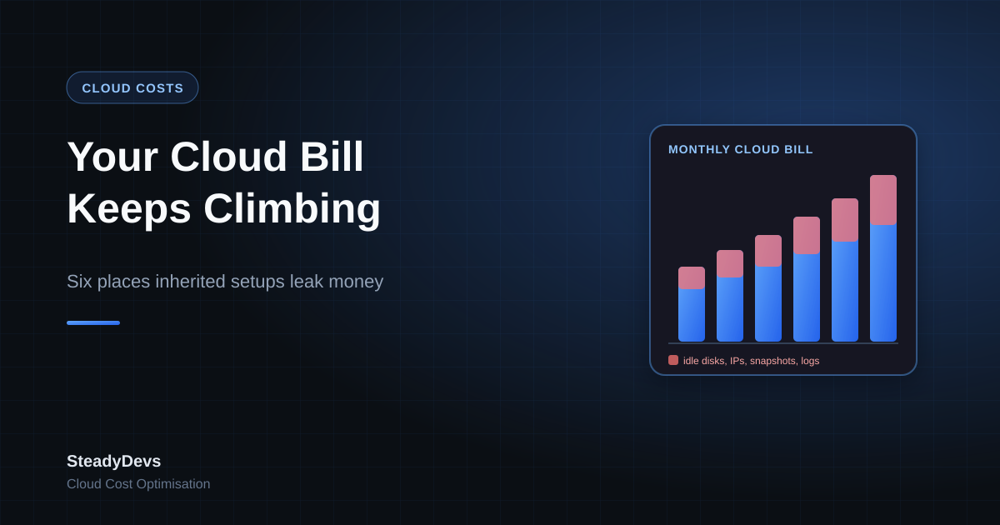

Cloud accounts rarely get expensive in one go. They get expensive the way a storeroom gets full: one test server here, a snapshot "just in case" there, a logging setting nobody switched back. Each item is small. Together, after a year or two and a change of developer, they can make up a large share of the bill.
The problem is worst in inherited accounts—set up by an agency, a freelancer or an employee who has since moved on. The people paying the bill can't tell which resources matter, so nobody dares delete anything, and the bill only goes one way.
Here are the six places we look first.
1. Machines sized for a launch that never needed it
Servers are often created large "to be safe" and never revisited. A virtual machine running at a small fraction of its CPU all month is a common sight. Right-sizing is usually the biggest single saving.
CPU isn't the whole story. A machine can look idle on CPU and still need its memory. Before shrinking anything, check its memory and swap history under real load. In one of our audits, a server that had already been "right-sized" was killing its own database under load—the cause was a cache configured to use most of the machine's memory. You can read the details in our cloud cost case study.
2. Things that are switched off but still billed
Stopping a virtual machine stops the compute charge. It doesn't stop the charges for what's attached to it:
- Disks from deleted or stopped servers, still billed every month.
- Reserved IP addresses that aren't attached to anything—providers charge for these precisely because they're idle.
- Snapshots and machine images taken before a change years ago and never cleaned up.
- Load balancers pointing at nothing.
These are usually the safest savings, because nothing running depends on them. "Usually" is doing some work in that sentence—confirm before deleting, especially with IP addresses that DNS records might still point to.
3. Storage that only grows
Container image registries, log buckets, backups and uploaded files grow every day and are almost never pruned. Every deploy can push a new image; every image is kept forever unless someone sets a retention rule. Lifecycle policies that move old data to cheaper storage classes, or delete it after a set period, stop the growth without touching anything live.
4. Logging and monitoring set to "everything"
Verbose logging is useful while debugging and expensive forever after. Debug-level logs from a busy application, ingested and retained by default, can cost more than the servers that produce them. Check what's being ingested, at what level, and how long it's kept.
5. The wrong service for the workload
Some older setups run a small API on a platform priced for always-on capacity, when a scale-to-zero service would cost a fraction for the same traffic. In the case study above, moving one API from App Engine to Cloud Run cut that line of spend by 99%, with a rollback kept ready. That kind of move is more involved than deleting a disk—but it's often where the largest structural savings sit.
6. Leftovers nobody owns
Test environments, staging copies, a proof-of-concept database, a scheduled job that exports data to a bucket nobody reads. The tell-tale sign is a resource with no label, no documentation and no one who can say what it does.
The test for "can we delete it?" isn't "does anyone know what this is?"—the honest answer is often no. It's "what do the audit logs show using it, and do we have a snapshot and a way back if we're wrong?"
Why provider recommendations aren't enough
Google Cloud and AWS both offer free resize suggestions. They're a good starting point, but they only see utilisation numbers. They don't know that the "idle" server is your month-end batch job, that a migration listed in your plan already happened, or that you're a few deploys away from a hard version limit. The savings are real; the risk is in applying them without that context.
A safe order of operations
- Look before touching. Read-only access first. Explain every line of the bill before changing any of it.
- Take the zero-risk items—unattached disks, idle IPs, stale snapshots—with confirmation and a record of what was removed.
- Right-size carefully, one machine at a time, after checking memory, with a snapshot and a rollback step written down.
- Set a budget alert. Costs drift back on their own. An alert at a sensible threshold catches the next leak in weeks rather than a year.
One thing worth doing today if you're on Google Cloud: turn on detailed billing export to BigQuery. It's free, takes minutes, and only records from the day you switch it on—so every week it stays off is detail you can never recover.
Not Sure What You're Paying For?
Our free cloud cost triage uses read-only access to explain your three biggest spend lines and estimate what's realistically recoverable—with an honest answer on whether it's worth going further.
Get a Free TriageFrequently Asked Questions
It depends entirely on how the account has been run. Accounts that have been reviewed recently may have little to recover; inherited accounts that have never been reviewed often have substantial waste. A triage of the bill is the only honest way to estimate it for your account.
Not without checking. Look at audit logs for recent use, check whether anything references the resource (DNS records, configuration files, scheduled jobs), and take a snapshot where possible before removing it.
Only after right-sizing. Committing to a year of capacity on oversized machines locks the waste in at a discount. Clean up first, observe steady usage, then commit.
No. A proper review starts with read-only viewer and billing roles. Changes should only be made later, item by item, with your approval.